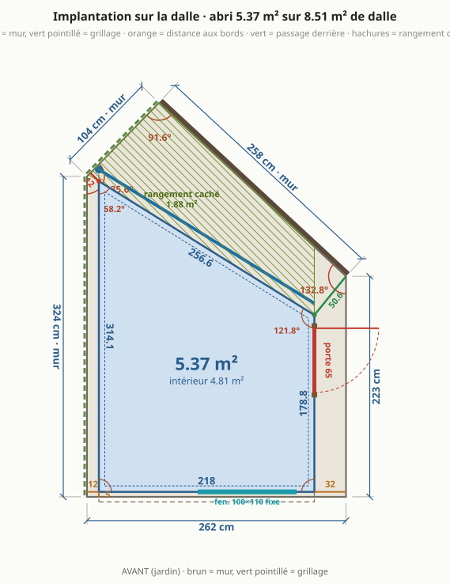
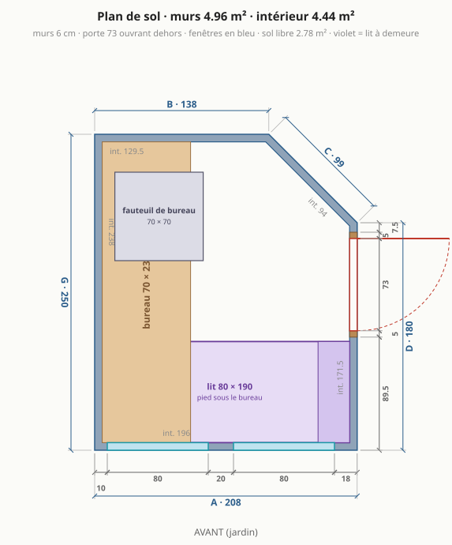
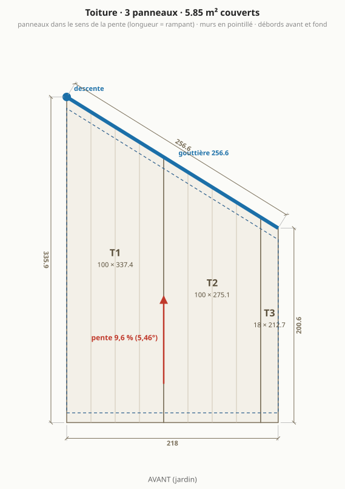
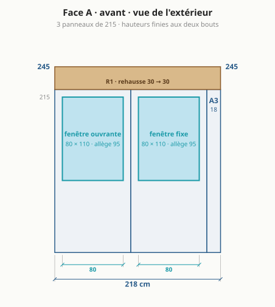
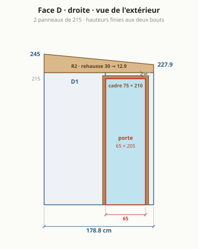
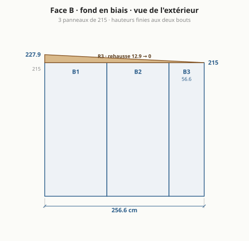
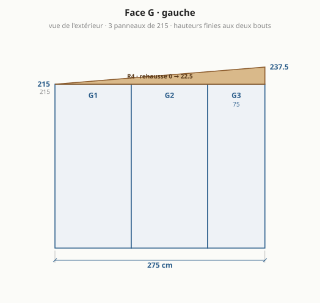
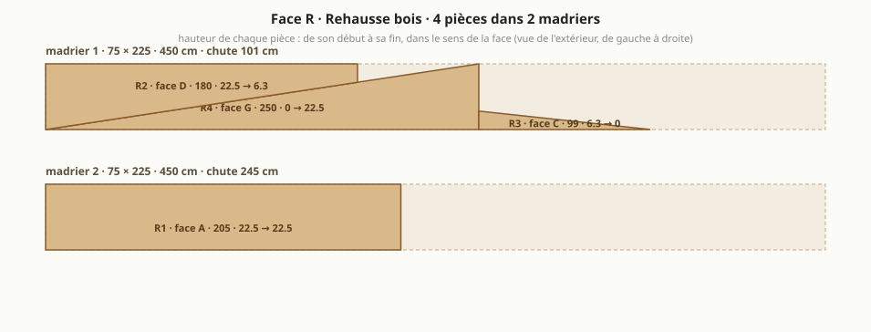

Abri de jardin : le bureau à cinq murs
Généré par
npm run emitdepuisparams.jsonetsite/src/compute.ts: ne pas éditer à la main. Études archivées et autres formes étudiées : etudes/variantes.md.

En bref
Dalle existante : 8,51 m², côtés 262 / 223 / 258 / 104 / 324 cm, murs de propriété à gauche et au fond.
4,44 m² intérieur (4,95 m² de murs), 54,9 cm de passage derrière.
5 murs en panneaux sandwich 6 cm autoportants : façade 208, droite 180, fond en biais 100, fond 136,6, gauche 250 cm.
Toit mono-pente vers le fond, 5,03° : 237 cm devant, 215 cm au plus bas.
Porte pleine 70 × 200 sur le mur droit, 2 fenêtres en façade, bureau sur le mur gauche, lit 80 × 190 à demeure le long de la façade.
Matériaux : 2 903 € TTC (2 468 € à 3 338 €), sans main-d'œuvre ni livraison ; équipement optionnel 200 €.
Formalités : emprise au sol 4,95 m², surface de plancher 4,44 m² ⇒ aucune formalité.
À trancher
- Pente (8,8 %, 5,03°) : à confirmer par le fabricant des panneaux de toit.
- Portée du toit (~2,5 m au plus long) en 6 cm sans panne : à confirmer dans le tableau du fabricant.
Plans
Implantation sur la dalle
Plan de sol

Toiture

Face A · façade (jardin)

Face D · droite (porte)

Face C · fond en biais

Face B · fond

Face G · gauche

Rehausse bois : débit des madriers

Dimensions
| face | longueur ext. | longueur int. | hauteur finie (début → fin) | angle au début |
|---|---|---|---|---|
| A · avant | 208 cm | 196 cm | 237 → 237 cm | 90° |
| D · droite | 180 cm | 171,5 cm | 237 → 221,2 cm | 90° |
| C · fond en biais | 100 cm | 95 cm | 221,2 → 215 cm | 134,4° |
| B · fond | 136,6 cm | 128,1 cm | 215 → 215 cm | 135,6° |
| G · gauche | 250 cm | 238 cm | 215 → 237 cm | 90° |
Murs 4,95 m² · intérieur 4,44 m² (murs de 6 cm retirés) · sol libre hors bureaux 2,77 m² · hauteur sous plafond 2,28 m devant, 2,06 m au plus bas (plancher isolé déduit).
Débit
Panneaux de mur (hauteur 215 cm, pose verticale)
| pièce | largeur | provenance | découpe |
|---|---|---|---|
| A1 | 115 cm | panneau entier | fenêtre 80 × 75 |
| A2 | 93 cm | panneau recoupé | fenêtre 80 × 75 |
| D1 | 65 cm | panneau recoupé | – |
| D2 | 115 cm | panneau entier | porte 70 × 200 |
| C1 | 100 cm | panneau recoupé | – |
| B1 | 115 cm | panneau entier | – |
| B2 | 21,6 cm | chute d'un autre panneau | – |
| G1 | 115 cm | panneau entier | – |
| G2 | 115 cm | panneau entier | – |
| G3 | 20 cm | chute d'un autre panneau | – |
8 panneaux de mur à commander, 8 de 115 × 215 (les bandes étroites sortent des chutes).
Panneaux de toit (dans le sens de la pente, longueur = rampant)
| pièce | largeur | longueur à commander | coupe |
|---|---|---|---|
| T1 | 115 cm | 261 cm | entier, coupes droites |
| T2 | 93 cm | 261 cm | refendu en largeur, bout arrière en biais |
Débords : 5 cm devant, 5 cm au fond, rives affleurantes sur les côtés. Surface couverte 5,17 m².
Rehausse bois (madrier 70 × 220, stock 450 cm)
| pièce | face | longueur | hauteur début → fin |
|---|---|---|---|
| R1 | A | 208 cm | 22 → 22 cm |
| R2 | D | 180 cm | 22 → 6,2 cm |
| R3 | C | 100 cm | 6,2 → 0 cm |
| R4 | G | 250 cm | 0 → 22 cm |
2 madriers : n°1 = R4 + R3 puis R2 (chute 20 cm) ; n°2 = R1 (chute 242 cm). Deux pièces sur un même tronçon = une seule coupe en biais.
Gouttière et profils
- Gouttière 235,8 cm derrière l'abri, en 2 tronçon(s) (C 97,1 + B 138,6) : les nervures du toit mènent toute l'eau aux bouts arrière des panneaux. Descente au coin arrière gauche.
- 5 angles : G/A 90°, A/D 90°, D/C 134,4°, C/B 135,6°, B/G 90° ; hauteur de chaque angle = hauteur finie du coin.
- Rail de pied sur tout le périmètre (8,75 m), bavettes de rive sur les côtés D et G.
Ouvertures
| ouverture | taille | où | détail |
|---|---|---|---|
| porte pleine | 70 × 200 (cadre 70 × 200) | face D, de 97,5 à 167,5 cm depuis la façade | ouvre vers l'extérieur ; cadre à 10 cm du mur du fond (face intérieure) et sous le haut du mur |
| fenêtre oscillo-battante | 80 × 75 | face A, de 17,5 à 97,5 cm depuis le coin gauche | allège 115 cm, au-dessus du bureau, dans un seul panneau |
| fenêtre oscillo-battante | 80 × 75 | face A, de 121,5 à 201,5 cm depuis le coin gauche | allège 115 cm, au-dessus du bureau, dans un seul panneau |
Aménagement
| élément | taille | place |
|---|---|---|
| bureau gauche | 70 × 238 cm | tout le mur gauche |
| fauteuil de bureau | 70 × 70 cm | devant le bureau gauche |
| lit à demeure | 80 × 190 cm | le long de la façade, tête côté porte, pied sous le bureau |
Matériaux à acheter (prix TTC, sans main-d'œuvre, sans livraison)
Panneaux · 1 140 €
| matériau | quantité | prix unitaire | montant | comment c'est compté, d'où vient le prix |
|---|---|---|---|---|
| Panneaux sandwich de mur 60 mm, 115 × 215 cm (tous les murs) (prix à confirmer) | 19,78 m² | 44 € | 870 € | 8 panneau(x) entier(s) de 115 à commander (les bandes recoupées sortent des chutes). fixation cachee PIR 60 mm : 37,80 EUR/m2 par paquet entier ; 40 a 50 EUR/m2 en petite quantite ou au detail (negoce). La plupart des vendeurs en ligne imposent 100 m2 ou un paquet de 12 panneaux de 6 m. (source) |
| Panneaux sandwich de toiture 60 mm, nervurés, teinte claire (prix à confirmer) | 6 m² | 45 € | 270 € | 2 panneaux coupés à longueur : T1 261 cm, T2 261 cm. 35,40 EUR/m2 par paquet de 10 ; 34,20 chez toleacier.fr en longueurs de stock ; jusqu'a 71 EUR/m2 au detail en negoce (Ondatherm). Teinte claire RAL 9010 disponible sur commande. (source) |
Bois · 132 €
| matériau | quantité | prix unitaire | montant | comment c'est compté, d'où vient le prix |
|---|---|---|---|---|
| Madrier 70 × 220 classe 4 (rehausse, lisse haute) | 9 ml | 15 € | 132 € | 2 pièce(s) de 450 cm. classe 4 : la section en stock est 70 x 220 (58,80 EUR les 4 m, 66 EUR les 4,5 m). Le 75 x 225 n'existe en stock qu'en classe 2 (environ 10 EUR/m). (source) |
Profils et bavettes · 537 €
| matériau | quantité | prix unitaire | montant | comment c'est compté, d'où vient le prix |
|---|---|---|---|---|
| Cornières alu 40 × 40 (pied des murs, dedans et dehors) | 16,09 ml | 10 € | 160 € | deux cornières sur le périmètre des murs moins la porte : le panneau se pose entre elles. corniere alu brut 40 x 40 x 1,5 mm, 2,50 m : 24,90 EUR (source) |
| Profils d'angle à 90°, extérieur + intérieur | 13,78 ml | 10 € | 138 € | 3 angles droits, hauteur finie de chaque coin, deux faces. 7,92 EUR HT le metre, tole 0,75 mm (source) |
| Profils d'angle pliés sur mesure (134,4°, 135,6°), extérieur + intérieur (prix à confirmer) | 8,72 ml | 15 € | 131 € | 2 angles non droits, deux faces, commandés pliés avec les panneaux. aucun prix public pour un pliage a 135 degres : estimation d'apres le profil standard, a faire chiffrer avec les panneaux (sinon un atelier de tolerie local plie des bandes plates) (source) |
| Bandes de rive de toit | 4,52 ml | 14 € | 63 € | bords du toit parallèles à la pente. 12,90 EUR/m en longueurs de 2,1 m (source) |
| Bavette de tête (bord haut du toit) | 2,08 ml | 14 € | 29 € | bord haut du toit. solin ou faitiere 2,10 m : 29 EUR (source) |
| Closoirs mousse sous les nervures (prix à confirmer) | 4,44 ml | 4 € | 16 € | bord haut + bord d'égout. rouleau de 6 m de 11,90 a 21,90 EUR ; le profil doit correspondre aux nervures du panneau choisi (source) |
Fixations · 108 €
| matériau | quantité | prix unitaire | montant | comment c'est compté, d'où vient le prix |
|---|---|---|---|---|
| Vis autoperceuses de toiture à rondelle, longues (panneau + nervure dans le bois) | 0,18 cent | 90 € | 16 € | 2 panneaux × 2 appuis × 4 vis, +10 %. inox 6,5 x 145 a rondelle EPDM : 89,99 EUR le cent. Longueur = panneau + nervure + 50 mm dans le bois. (source) |
| Vis de couture (recouvrements de panneaux, bavettes, profils) | 0,64 cent | 35 € | 22 € | un recouvrement tous les 40 cm, une bavette tous les 30 cm, +10 %. 4,8 x 20 : de 24 a 45 EUR le cent (source) |
| Vis autoperceuses de panneaux de mur (pied et tête) | 0,53 cent | 90 € | 48 € | 8 panneaux × 2 extrémités × 3 vis, +10 %. vis 6,3 x 100 + rondelle + cache de couleur (source) |
| Chevilles ou goujons pour fixer les cornières de pied dans la dalle | 40 u | 1 € | 22 € | une tous les 50 cm, sur chacune des deux cornières. goujons 8 x 80 : 55,90 EUR la boite de 100 (source) |
Étanchéité · 168 €
| matériau | quantité | prix unitaire | montant | comment c'est compté, d'où vient le prix |
|---|---|---|---|---|
| Bande d'arase sous le pied des murs | 8,75 ml | 1 € | 5 € | périmètre des murs. rouleau de 30 m x 30 cm : 16,90 EUR (source) |
| Bande butyle (joints de panneaux, tête de mur sous la rehausse) | 22 ml | 2 € | 33 € | 5 joints de mur × 2,2 m + périmètre + recouvrements de toit. rouleau de 13 m : 19,66 EUR (source) |
| Mastic polyuréthane ou MS polymère, cartouches | 4 cartouche | 9 € | 36 € | une cartouche pour 8 m de cordon : pied de mur dedans et dehors, tour des ouvertures. MS polymere de 6,50 a 13 EUR ; Sikaflex 11FC environ 11,50 EUR (source) |
| Bande comprimée au pourtour des ouvertures (prix à confirmer) | 10,9 ml | 7 € | 76 € | tour de la porte et des fenêtres. rouleau de 5 m : 44 EUR en negoce, moins cher ailleurs (source) |
| Mousse polyuréthane expansive, bombes | 2 bombe | 9 € | 18 € | calfeutrement des ouvertures et des angles. 750 ml : de 7,90 a 9,90 EUR (source) |
Ouvertures · 437 €
| matériau | quantité | prix unitaire | montant | comment c'est compté, d'où vient le prix |
|---|---|---|---|---|
| Bloc-porte plein 70 × 200 cm, avec dormant (prix à confirmer) | 1 u | 199 € | 199 € | une porte. bloc-porte de service EXTERIEUR en PVC, plein, 70 x 200 hors tout, dormant compris : Brico Depot le fait en 70, 80 ou 90 de large et 200 ou 205 de haut (https://www.bricodepot.fr/catalogue/construction-renovation/fenetre-porte-escalier/porte-dentree-interieure-garage/porte-de-service/). Prix du 80 x 205 (199 EUR) : celui du 70 est a relever en magasin. Choisir un modele a serrure multipoint. |
| Fenêtre oscillo-battante PVC double vitrage 80 × 75 cm | 2 u | 119 € | 238 € | fenêtres ouvrantes. taille de stock 80 x 75 (2 vantaux, Uw 1,2), sans delai ; hors tout 85 x 78 ; poignee vendue a part (source) |
Eaux pluviales · 79 €
| matériau | quantité | prix unitaire | montant | comment c'est compté, d'où vient le prix |
|---|---|---|---|---|
| Gouttière demi-ronde | 2,36 ml | 5 € | 11 € | 2 tronçon(s) : C 97,1 cm + B 138,6 cm. PVC demi-ronde de 25 : 9,40 EUR les 2 m (zinc : 22,50 EUR les 2 m) (source) |
| Crochets de gouttière | 6 u | 2 € | 12 € | un tous les 50 cm (source) |
| Naissance, fonds, angle, coudes et colliers (lot) | 1 lot | 45 € | 45 € | un angle, une naissance, deux fonds, deux coudes, deux colliers. naissance 14 + 2 fonds 6 + jonction ou angle 5 + 2 coudes 11 + 3 colliers 8 (source) |
| Tuyau de descente | 2,15 ml | 5 € | 11 € | hauteur du mur côté égout. tube de 80 : 10 EUR les 2 m (source) |
Plancher isolé · 223 €
| matériau | quantité | prix unitaire | montant | comment c'est compté, d'où vient le prix |
|---|---|---|---|---|
| Film polyéthylène sur la dalle | 5,11 m² | 1 € | 5 € | surface intérieure, +15 % de recouvrements. rouleau de 20 m2 : 19,90 EUR (source) |
| Isolant XPS 60 mm, posé à joints serrés sur le film | 4,66 m² | 12 € | 54 € | surface intérieure, +5 %. XPS 60 mm rainure, 1,25 x 0,60 : 8,63 EUR le panneau (source) |
| Dalles OSB3 22 mm rainurées, collées aux rainures | 4,88 m² | 15 € | 73 € | surface intérieure, +10 % de chutes. dalle OSB3 22 mm rainuree 4 cotes, 250 x 67,5 : 25,14 EUR (9,99 EUR/m2 chez Brico Depot, rainure non confirmee) (source) |
| Colle à bois D3 pour les rainures | 1 u | 18 € | 18 € | un flacon de 750 g pour 10 m² de dalles. colle vinylique D3, 750 g (source) |
| Revêtement de sol (vinyle ou stratifié) | 4,88 m² | 15 € | 73 € | surface intérieure, +10 % de chutes. vinyle rigide a clipser ; stratifie des 5 EUR/m2 (source) |
Ventilation · 12 €
| matériau | quantité | prix unitaire | montant | comment c'est compté, d'où vient le prix |
|---|---|---|---|---|
| Grilles ou entrées d'air murales, avec moustiquaire | 2 u | 6 € | 12 € | une basse, une haute, sur deux murs opposés. grille alu a persiennes avec moustiquaire, 100 x 100 ; un extracteur hygroreglable coute 95 EUR (source) |
Équipement (optionnel) · 200 €
| matériau | quantité | prix unitaire | montant | comment c'est compté, d'où vient le prix |
|---|---|---|---|---|
| Goulotte électrique 2 m | 3 u | 15 € | 45 € | la moitié du périmètre, en longueurs de 2 m. 60 x 40, longueur de 2 m (source) |
| Multiprise parafoudre (prix à confirmer) | 1 u | 20 € | 20 € | sur le câble déjà en place. pas de prix lu, 15 a 30 EUR |
| Réglette ou plafonnier LED | 1 u | 10 € | 10 € | un point lumineux. reglette LED 120 cm 36 W : 6,90 EUR (source) |
| Radiateur panneau 750 W à thermostat | 1 u | 65 € | 65 € | bureau chauffé toute l'année. panneau acier 750 W, thermostat, detection de fenetre ouverte (source) |
| Stores des fenêtres de façade (prix à confirmer) | 2 u | 30 € | 60 € | un par fenêtre. pas de prix releve |
Consommables · 67 €
| matériau | quantité | prix unitaire | montant | comment c'est compté, d'où vient le prix |
|---|---|---|---|---|
| Lame de scie circulaire pour métal (coupe à froid des panneaux) | 1 u | 67 € | 67 € | jamais de meuleuse : elle brûle le laquage et la mousse. Bosch Expert for Sandwich Panel, 36 dents (source) |
Total des matériaux : 2 903 € TTC (fourchette 2 468 € à 3 338 €, ±15 %). Équipement optionnel en plus : 200 €. Hors total : Livraison des panneaux (service, hors total) ≈ 250 €.
Prix relevés chez des marchands français (prix_materiaux_eur_ttc dans params.json, source notée pour chacun) ; les quantités se recalculent avec l'abri.
Guide de montage
Avant de commander
- Faire confirmer par le fournisseur la largeur utile des panneaux (115 cm ici) : tout le calepinage en dépend.
- Acheter des panneaux en petite quantité est le vrai sujet. Les vendeurs en ligne les moins chers imposent 100 m² ou un paquet entier de panneaux de 6 à 7,5 m. Demander un devis « coupé à longueur, petite quantité » à deux spécialistes et à un négoce local, qui vend au panneau mais plus cher. Sinon acheter des longueurs de stock et les recouper sur place : compter alors plus de surface que le débit.
- Rehausse : madrier 70 × 220 classe 4 (autoclave, pour l'extérieur), en longueurs de 450 cm : c'est la section vendue en stock dans cette classe.
- Fenêtres et porte sont des articles de stock, sans délai : la découpe des panneaux se fait aux cotes hors tout lues sur l'article reçu, pas aux cotes nominales.
- Faire confirmer la portée admise du panneau de toit de 6 cm : 2,5 m ici ; et la pente minimale (8,8 % ici ; ArcelorMittal admet 5 % pour des panneaux d'une seule longueur, sans pénétration ni recouvrement en bout).
- Commander les panneaux de toit coupés à longueur, et avec les panneaux les profils d'angle droits et les profils des angles de 134,4° et 135,6° pliés sur mesure.
- Prévoir deux personnes pour lever les murs et poser le toit, et une journée sans vent : un panneau de 2 m² est une voile.
Outillage
- Scie circulaire avec lame pour métal (coupe à froid) et rail de guidage ; scie sauteuse lame métal pour les angles des ouvertures. Pas de meuleuse : elle brûle le laquage et la mousse, et ses étincelles piquent la tôle.
- Visseuse à choc avec douilles 8 mm, perforateur et foret béton, cordeau à tracer, mètre de 5 m, niveau de 1,20 m ou laser, grande équerre, fil à plomb.
- Pistolet à mastic, cutter, serre-joints, 4 étais ou chevrons pour tenir les murs pendant le montage, échelle ou escabeau stable.
- Gants anti-coupure, lunettes, protection auditive. Les rives de tôle coupent.
Étape 1 · Tracer l'abri sur la dalle
Tout le reste s'aligne sur ce tracé : dix minutes de plus ici évitent un mur qui ne ferme pas.
Outils : cordeau, mètre, grande équerre
- Tracer la façade à 5 cm du bord avant de la dalle et le mur gauche à 10 cm du bord gauche.
- Reporter les 5 murs dans l'ordre : A 208 cm, D 180 cm, C 100 cm, B 136,6 cm, G 250 cm.
- Angles, dans le même ordre : 90°, 90°, 134,4°, 135,6°, 90°.
À contrôler avant de continuer :
- Diagonales du tracé : coin avant gauche → haut du mur droit = 275,1 cm ; coin avant droit → coin arrière gauche = 325,2 cm.
- Passage derrière l'abri : 54,9 cm au plus étroit, à mesurer une fois le tracé fait.
Étape 2 · Poser les cornières de pied
Deux cornières alu tiennent le pied de chaque panneau, dehors et dedans : un rail en U fait sur place, qui se coupe à n'importe quel angle.
Outils : perforateur, visseuse, scie à onglet lame alu, niveau
- Dérouler la bande d'arase sur le tracé (8,75 m), poser la cornière extérieure dessus, aile debout dehors, nu extérieur sur le trait.
- Couper les cornières d'onglet à chaque angle (la moitié de l'angle du mur), cheviller tous les 50 cm, et à 10 cm de chaque angle.
- Interrompre les cornières sur la largeur de la porte (70 cm, face D).
- Cordon de mastic continu entre la cornière et la dalle, côté extérieur.
- Les cornières intérieures se posent avec les murs : chacune serrée contre le pied des panneaux, donc à 6 cm de l'extérieure sans avoir à mesurer.
À contrôler avant de continuer :
- Cornières de niveau : caler si la dalle a plus de 5 mm de faux niveau sur un mur.
- Angles conformes au tracé avant de cheviller le dernier mur.
Étape 3 · Préparer toutes les coupes à plat
Un panneau se coupe bien sur tréteaux, mal une fois debout.
Outils : scie circulaire lame métal, rail de guidage, scie sauteuse
- Bandes de mur : A2 93 cm, D1 65 cm, C1 100 cm, B2 21,6 cm, G3 20 cm. Couper dans la longueur, face laquée vers le bas, et garder les chutes : elles fournissent les autres bandes.
- Fenêtres : 80 × 75 cm, bas à 115 cm ; 80 × 75 cm, bas à 115 cm, une par panneau, jamais sur un joint. Percer les quatre angles, puis couper à la scie sauteuse.
- Toit : T2 à couper en biais d'après le plan de toiture.
- Rehausse : R1 (mur A, 208 cm, 22 → 22 cm), R2 (mur D, 180 cm, 22 → 6,2 cm), R3 (mur C, 100 cm, 6,2 → 0 cm), R4 (mur G, 250 cm, 0 → 22 cm), tirées de 2 madrier(s) selon le plan de débit.
À contrôler avant de continuer :
- Retirer le film de protection des panneaux au fur et à mesure : après quelques semaines au soleil il ne part plus.
- Ébavurer chaque coupe et passer une retouche de peinture sur la tôle mise à nu.
Étape 4 · Monter le mur gauche à plat, puis le lever
À 10 cm du grillage de la limite aucune visseuse ne passe : ce mur se fait au sol.
Outils : visseuse, serre-joints, 2 personnes, étais
- Assembler G1 (115), G2 (115), G3 (20) à plat, butyle dans chaque joint, et visser dessus leur pièce de rehausse.
- Placer la bande de 20 cm côté façade, la seule extrémité qu'on atteindra ensuite.
- Lever le mur à deux, le poser contre la cornière extérieure, le tenir par deux étais vissés dans la rehausse.
- Poser la cornière intérieure contre le pied, la cheviller et la visser dans la tôle : dehors, la cornière déjà posée tient le pied, aucune vis n'est à faire côté grillage.
À contrôler avant de continuer :
- Aplomb dans les deux sens avant de lâcher les étais.
- Vide de 10 cm régulier sur toute la longueur.
Étape 5 · Monter les autres murs
On tourne dans un seul sens pour que chaque panneau s'emboîte dans le précédent.
Outils : visseuse, niveau, étais
- Mur B (fond, 136,6 cm) : B1 (115), B2 (21,6).
- Mur C (fond en biais, 100 cm) : C1 (100).
- Mur D (droite, 180 cm) : D1 (65), D2 (115), en laissant le vide du cadre de porte.
- Mur A (façade, 208 cm) : A1 (115), A2 (93).
- Butyle dans chaque emboîtement, panneau serré contre le précédent, pied pris entre les deux cornières et vissé dans chacune.
- Étayer chaque mur tant que la rehausse n'est pas posée : avant elle, rien ne tient les têtes.
À contrôler avant de continuer :
- Aplomb de chaque panneau avant de visser le suivant : l'erreur se cumule.
- Têtes de murs toutes à 215 cm, à 3 mm près, au niveau laser.
Étape 6 · Fermer les angles
Les profils d'angle lient deux murs et ferment la mousse.
Outils : visseuse, mastic
- Profil extérieur puis intérieur à chacun des 5 angles, vissé tous les 30 cm (vis de couture), mastic sous les deux ailes.
- Les angles de 134,4° et 135,6° reçoivent les profils pliés sur mesure : les présenter à blanc avant de percer.
- Bourrer le vide de l'angle à la mousse avant de fermer le profil intérieur.
À contrôler avant de continuer :
- Aucun jour entre profil et panneau : c'est là que l'air et l'eau entrent.
- Chaque profil sur mesure porte sur ses deux ailes sur toute la hauteur, sans forcer.
Étape 7 · Poser la rehausse bois
Elle donne la pente au toit et sert de lisse haute : c'est elle qui tient les murs entre eux.
Outils : visseuse, serre-joints
- Poser R1 sur A, R2 sur D, R3 sur C, R4 sur G, sur un cordon de butyle en tête de panneaux.
- Visser la rehausse dans la tôle des deux faces de chaque panneau, tous les 40 cm.
- Assembler les pièces entre elles aux angles par deux longues vis en biais.
À contrôler avant de continuer :
- Hauteurs finies des coins : 237 · 237 · 221,2 · 215 · 215 cm (dans l'ordre des coins, à partir du coin avant gauche).
- Dessus de la rehausse dans un même plan : poser une règle d'un mur à l'autre.
Étape 8 · Couvrir
Nervures dans le sens de la pente, vers le fond : l'eau ne quitte le toit que par le bas des panneaux.
Outils : visseuse, 2 personnes, échelle
- Poser T1 (115 × 261 cm), T2 (93 × 261 cm), en commençant du côté opposé aux vents dominants.
- Closoirs mousse sous les nervures, en haut et en bas, avant de visser.
- Visser dans la rehausse par le sommet des nervures, vis longues à rondelle, quatre par panneau et par appui. Serrer jusqu'à écraser la rondelle, pas plus.
- Recouvrements entre panneaux : butyle, puis vis de couture tous les 40 cm.
- Bandes de rive sur les bords parallèles à la pente, bavette de tête sur le bord haut.
À contrôler avant de continuer :
- Débords : 5 cm devant, 5 cm au fond, 0 cm à droite, 0 cm à gauche.
- Ne jamais marcher entre deux appuis : marcher au droit des murs, sur une planche.
Étape 9 · Gouttière et descente
Recueillir toute l'eau du toit et l'emmener au jardin.
Outils : visseuse, niveau, scie à métaux
- 235,8 cm de gouttière en 2 tronçon(s) : C 97,1 cm + B 138,6 cm.
- Crochets tous les 50 cm, pente de 5 mm par mètre vers la descente.
- Descente au point bas, évacuée loin de la dalle.
À contrôler avant de continuer :
- Verser un seau d'eau en haut du toit : tout doit arriver à la descente.
Étape 10 · Poser la porte
Le dormant du bloc-porte porte le battant : il se fixe à la dalle, à la rehausse et à la tôle des panneaux, jamais dans la mousse.
Outils : visseuse, niveau, cales
- Habiller la tranche des panneaux autour du vide (70 × 200 cm, mur D) d'un profil en U.
- Poser le bloc-porte plein de service, dormant compris, calé d'aplomb, ferré côté fond, ouvrant vers l'extérieur : chevillé dans la dalle en pied, vissé dans la rehausse en tête, et dans la tôle des panneaux par le profil en U.
- Bande comprimée entre dormant et profil, mastic à l'extérieur, seuil sur cordon de mastic.
À contrôler avant de continuer :
- Jeu régulier de 3 mm autour du battant, la porte se ferme sans forcer.
- Arrêt de porte à prévoir : ouverte, elle prend le vent.
Étape 11 · Poser les fenêtres
Une fenêtre se fixe dans la tôle des deux faces, jamais dans la mousse.
Outils : visseuse, niveau, cales
- 2 fenêtre(s) en façade : oscillo-battante de 17,5 à 97,5 cm ; oscillo-battante de 121,5 à 201,5 cm.
- Habiller la tranche de la découpe d'un profil en U ou d'un tasseau, caler la fenêtre, visser par le dormant.
- Bande comprimée au pourtour, mastic dehors, bavette d'appui sous la fenêtre.
À contrôler avant de continuer :
- Niveau et aplomb du dormant avant le serrage final.
- L'ouvrante s'ouvre sans toucher le bureau.
Étape 12 · Étanchéité générale
L'air qui entre apporte l'humidité qui condense sur l'acier.
Outils : pistolet à mastic, mousse
- Cordon de mastic au pied des murs, dedans et dehors.
- Fermer le vide de 10 cm contre le grillage de la limite : bavette devant, grillage fin au fond (feuilles, rongeurs), sans bloquer l'écoulement de l'eau.
- Mousse puis mastic à chaque traversée (câble, entrée d'air).
À contrôler avant de continuer :
- De nuit, une lampe allumée dedans : aucun jour visible de dehors.
Étape 13 · Plancher isolé
La dalle est froide : le plancher fait le confort des pieds.
Outils : scie, visseuse
- Film polyéthylène sur la dalle, remonté de 10 cm le long des murs, lés recouverts de 20 cm.
- Isolant XPS de 60 mm posé à joints serrés sur tout le sol, sans vis ni colle : c'est un plancher flottant.
- Dalles OSB de 22 mm posées dessus, joints décalés, colle dans chaque rainure, 8 mm de jeu contre les murs ; revêtement de sol ensuite.
À contrôler avant de continuer :
- Avant le film : la dalle est plane à 5 mm près sous une règle de 2 m, sinon ragréer les creux.
- Hauteur sous plafond après plancher : 2,28 m au plus haut, 2,06 m au plus bas.
Étape 14 · Ventilation, électricité, aménagement
Une pièce étanche et chauffée sans ventilation condense.
Outils : scie cloche, visseuse
- Deux entrées d'air sur deux murs opposés, une basse et une haute.
- Électricité en apparent, sous goulotte, depuis le câble existant : on ne perce pas la tôle extérieure pour un câble.
- Bureaux sur pieds ou sur équerres au sol : 70 × 238 cm à gauche. Les parements de 0,5 mm ne portent pas une charge suspendue.
À contrôler avant de continuer :
- Après une semaine chauffée : aucune trace de condensation aux angles ni autour des fenêtres.
Pourquoi cette forme
Points forts
- Cinq murs, aucun angle aigu. Deux angles proches de 135°, un seul mur en biais (100 cm) : les deux angles obtus se ferment par des profils pliés sur mesure, commandés avec les panneaux.
- 4,95 m² de murs, au seuil. Aucune formalité en mairie (sous 5 m²), 4,44 m² à l'intérieur, 2,77 m² de sol libre hors bureaux.
- Façade de niveau à 237 cm, toit vers le fond. La gouttière (235.8 cm) est derrière l'abri, invisible du jardin ; la façade ne porte que deux fenêtres.
- Porte pleine sur le côté. Les voisins de l'étage voient la façade, jamais l'intérieur. La lumière entre par les deux fenêtres de façade : écrans sur le bureau gauche, lumière de côté.
- Passage derrière de 54 cm. 2,13 m² de dalle cachés derrière le mur du fond pour les outils de jardin : pas de second abri.
- Une seule référence de panneau. 8 panneaux de mur et 2 de toit, tous de 115 cm de large : une seule ligne de devis, et chaque chute sert à n'importe quel mur.
- Un bureau, un lit. Le bureau court sur tout le mur gauche (238 cm, trois écrans de 27"), le lit de 80 × 190 longe la façade, tête côté porte : couché, les pieds vont vers les écrans. Le fauteuil se range sous le plateau.
Points faibles
- Portée du toit 2,5 m. À la limite pour des panneaux de 60 mm : sans panne, le fabricant doit confirmer qu'il la porte seul (question Q2).
- Pente 8,8 %. Faible pour une toiture en panneaux ; le fabricant doit la confirmer pour des panneaux d'une seule longueur, sans recouvrement.
- La descente est au coin arrière gauche. Un tuyau au sol, par le passage derrière l'abri, ramène l'eau au jardin : rien ne doit s'écouler au pied du mur de propriété.
- Aucun débord au-dessus de la porte. Prévoir une petite marquise.
- Deux angles proches de 135°. Leurs profils d'angle se commandent pliés sur mesure avec les panneaux, sans prix public : à faire chiffrer au devis.
- Un mur à 10 cm du grillage : le mur gauche se monte à plat puis se lève, et le vide se ferme par une bavette, pas par une visseuse.
Questions
- Q1 La pente de 8,8 % est-elle admise par le fabricant des panneaux de toit, pour 2,5 m de portée en 60 mm ?
- Q2 Le panneau de toit de 60 mm porte-t-il 2,5 m seul, ou faut-il une panne en travers à mi-profondeur ?
- Q3 Quelle est la hauteur réelle du mur du fond (grand pan), que le débord arrière doit dégager ?
- Q4 Où va l'eau de la descente : au jardin, ou dans un récupérateur au bout du mur droit ?
Idées à explorer
- I1 Toit en 80 ou 100 mm. Un panneau plus épais porte 2,5 m sans panne : une pièce, deux sabots et une étape de moins, contre un panneau un peu plus cher.
- I2 Chaîne de pluie. Au bout de la gouttière, une chaîne dans un bac ou un tonneau au coin, plutôt qu'un tuyau au sol jusqu'au jardin : rien à ramener, de l'eau pour le jardin.
- I3 Rehausse plus basse. Si le fabricant admet 5 %, un madrier 75 × 150 (chute 15 cm) : bois courant, façade à 230, moins de prise au vent, une pente encore au-dessus du minimum.
- I4 Électricité sous le bureau. Une seule goulotte sous le plateau du bureau gauche, prises fixées dessous : rien de visible sur les murs, un seul parcours depuis le câble.